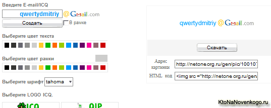
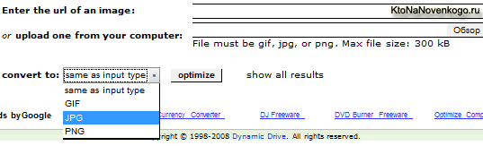

GoGetLinks, создание иконок из ваших E-mail и ICQ номеров, оптимизация изображений для сайта
Здравствуйте уважаемые читатели блога KtoNaNovenkogo.ru. Сегодня в эфире очередной, четвертый по счету, выпуск Веб-обзоров. В этот раз разговор пойдет про то, где и как можно создать иконки из ваших E-mail и ICQ номеров, а так же мы рассмотрим работу с самой выгодной на сегодняшний день для вебмастера биржой рекламных обзоров GoGetLinks. Ну и в конце статьи мы затронем тему оптимизации изображений для вашего сайта.
Сервисы для создания иконок из ваших E-mail и ICQ номеров, сайт объявлений
Вы, наверное, часто видели на сайтах, форумах и блогах, когда вместо E-mail адреса вида Vasy_pupkin@mail.ru пишут что-то типа Vasy_pupkin{гав-гав}mail.ru. Остроумно, но зачем это делают? Все довольно просто. Если везде и всюду оставлять свой E-mail адрес в открытом виде,
то огромное количество спама не заставит себя ждать и быстро переполнит
ваш почтовый ящик. Хотя, например, в почтовом сервисе Google спаморезка
работает очень достойно, но даже она зачастую пропускает спам и что еще
хуже — заносит в спам нужные и важные письма. Поэтому все равно
приходится пробегать по диагонали содержимое папки со спамом.
Но вовсе не обязательно использовать указанный выше способ (Vasy_pupkin{гав-гав}mail.ru) для обхода спамеров. Оказывается можно создать иконку со своим E-mail адресом или номером ICQ и вставлять уже ее на сайтах, блогах форумах. Первый из сервисов для создания иконок из E-mail адресов и номеров ICQ — Netone. Интерфейс очень простой:

Для того, чтобы создать иконку для E-mail адреса или ICQ, вам нужно
сначала выбрать из области внизу страницы нужный логотип вашего сервиса
E-mail или ICQ (в моем случае это Gmail). Затем вводите нужные данные в
поле «Введите E-mail/ICQ», выбираете цвет и тип шрифта, нажимаете кнопку
«Создать». Созданную иконку вы можете загрузить себе на компьютер,
нажав кнопку «Скачать» или же оставить иконку храниться на данном
сервисе, а в нужные места сайта, форума или блога вставлять ссылку на
эту иконку, которую можно скопировать в области «Адрес картинки» или
«HTML код».
Второй сервис Защита почты и аськи от спама. Работать с этим сервисом тоже очень просто. Вы вводите в соответствующие поля ваш E-mail адрес или номер ICQ, выбираете цвет текста или фона, а затем нажимаете кнопку «Сгенерировать». На открывшейся странице вы увидите получившуюся иконку, а так же сможете скопировать BB код для подписи на форуме либо HTML код для вставки на домашнюю страницу (блоги):
Ну, и еще хотел бы сказать пару слов про новый современный портал бесплатных частных и коммерческих объявлений. Собственно, наверное все и так понятно, осталось только поделиться ссылкой — Сайт объявлений.
GoGetLinks — самая выгодная биржа рекламных обзоров
Не так давно открылась новая биржа рекламных обзоров и постовых под названием GoGetLinks. По своей сути она является конкурентом уже достаточно давно существующих бирж Блогун и J2J. Про Блогун ничего хорошего сказать не могу - очень не выгодные, на мой взгляд, условия для вебмастеров. Биржа J2J— это уже гораздо лучше, но новая биржа GoGetLinks — это что-то с чем-то. Расскажу чуть поподробнее о работе с этой биржой.
Для начала работы с биржей GoGetLinks вам нужно будет пройти по ссылке «Регистрация». Проверка вашего сайта будет осуществлять модераторами вручную и поэтому может занять несколько дней. Но в этом как раз и есть очень большой плюс данной биржи — в GoGetLinks принимают только сайты для людей (СДЛ). Сателиты и прочие ГС (сайты не предназначенные для людей, которые затачиваются только под привлечение трафика с поисковых систем) в биржу не принимаются. И это очень хорошо, т.к. такие сайты (ГС) очень сильно сбивают цены на постовые и обзоры.
Второй очень большой плюс GoGetLinks — это то, что постовые и обзоры можно размещать в старых постах. На блоге KtoNaNovenkogo.ru на данный момент опубликовано около 70 статей. Большинство из них были написаны еще до того, как я начал монетизировать блог. Поэтому возможность размещать постовые и миниобзоры в старых постах позволит существенно увеличить доход. К тому же, при размещении обзоров в старых постах, деньги сразу переводятся на ваш счет и не надо дожидаться индексации статьи.
Работа с биржей довольно проста. После того как ваш сайт примут в
биржу GoGetLinks, вам нужно будет перейти на вкладку «Вебмастер», а
потом на вкладку «мои площадки».
Напротив адреса своего сайта, например, в колонке «Контекст» щелкаете по цене. В результате откроется окно, в котором вы сможете назначить цену за контекстную ссылку, заметки (миниобзора) и ссылки с картинок. Там же вы сможете увидеть средние цены для сайтов с аналогичным вашему показателем ТИц. Когда поступит заявка на размещение ссылки или заметки, то вас предупредят об этом в письме. На бирже крайне трепетно относятся к времени выполнения задания на размещение ссылки — чем быстрее, тем лучше. Поэтому по возможности не откладывайте публикацию ссылки или заметки в долгий ящик.
Можете также посмотреть видео с ютюба «Основы работы с Gogetlinks для вебмастера»:
Gogetlinks.net для оптимизаторов:
Как уменьшить количество открытых для индексации поисковиками внешних ссылок на страницах вашего блога (плагин WP-NoRef)
В задании на размещение ссылки или миниобзора в качестве условия часто указывается максимально допустимое количество открытых внешних ссылок (обычно ставят ограничение в 3-5 открытых внешних ссылок) на странице, в которой будет размещена ссылка. Так же иногда заказчики выдвигают условие с максимальным количеством внутренних ссылок на странице, где вы будете публиковать ссылку или миниобзор. Мне пришлось пару раз отказаться от весьма выгодных предложений именно по причине слишком большого количества внутренних (ведущих на страницы моего же сайта) ссылок. После этого пришлось заняться оптимизацией для снижения общего числа внутренних ссылок.
Внешние ссылки можно побороть заключая их в теги <noindex> и вставляя в тег ссылки A атрибут rel="nofollow". Для закрытия от индексации поисковиками ссылок внутри постов и комментариев блога на WordPress можно использовать плагин WP-NoRef. Как устанавливаются плагины вы можете почитать здесь — Принципы установки и настройки плагинов для WordPress. После установки плагина WP-NoRef все ссылки в постах и комментариях автоматически будут закрываться от индексации поисковиками добавлением тегов <noindex> и атрибутов rel="nofollow".
Для того, чтобы открыть для индексации нужные ссылки в статье или же в комментариях, вам нужно будет зайти в настройки плагина WP-NoRef
в админпанели WordPress (Настройки — WP-NoRef) и указать в верхнем
поле адрес сайта, для которого не будет применяться данный плагин. Или
же вы можете в поле, расположенном внизу страницы настроек плагина
WP-NoRef, прописать название класса (например ref), которое вы затем
будете использовать для открытия ссылок поисковикам. Вам нужно будет
добавлять в код ссылки атрибут class="ref" примерно так:
1 | <a class="ref" href="http://ktonanovenkogo.ru/wordpress/plagini_wordpress/principy-ustanovki-i-nastrojki-plaginov-dlya-wordpress-reshenie-vozmozhnyx-problem.html"> |
Теперь данная ссылка будет доступна для индексации поисковиками.
Внешние ссылки в коде шаблона придется закрывать вручную. Для примера можете использовать статью, где говорится как закрыть от индексации поисковиками внешние ссылки в счетчике FeedBurner.
В бирже GoGetLinks деньги можно будет выводить только после трех месяцев с момента размещения вами заказанной ссылки. Это делается для того, чтобы вы не могли сразу же после опубликования снять оплаченную ссылку. Но тем не менее сомнений в честности данной биржи у меня не возникает, т.к. она создавалась и работает под патронажем известной биржы статей Миралинкс. Да, деньги можно выводить на рублевые и долларовые кошельки WebMoney.
Оптимизация изображений для вашего сайта
Для ускорения загрузки страниц вашего сайта вы должны в обязательном порядке оптимизировать изображения, которые используются в оформлении страниц вашего сайт. Оптимизировать — это значит без значительного ухудшения качества изображения, максимально уменьшить его вес. Для этой цели вы можете использовать специальные программ для работы с графикой. Самой известной из которых, конечно же, является Фотошоп. Но его освоение требует времени и сил. Но, вовсе не обязательно применять Фотошоп. Достаточно будет простого вьювера, например, FastStone Image Viewer.
Просто открываете нужное изображение в FastStone Image Viewer и выбираете из контекстного меню «Сохранить как», а затем нажимаете внизу диалогового окна сохранения на кнопку «Options». В открывшемся окне, в зависимости от формата вашего изображения, у вас появятся те или иные возможности изменить качество и размер сохраняемого изображения. Попробуйте разные варианты, тем более, что результат произведенных изменений сразу отобразится в правом окне «После». И вы его можете сравнить с оригиналом в окне «Перед». Изображения в формате PNG при уменьшении количества используемых цветов до 256 могут уменьшиться в размерах в два-три раза.
Практически тоже самое можно сделать воспользовавшись онлайновым сервисом для оптимизации изображений Online Image Optimizer от Dynamic Drive, который может вам понадобиться если под рукой нет программы для работы с графикой. Этот сервис представляет собой интернет-инструмент для сжатия изображений
с ухудшением качества. У сервиса есть ограничение по размеру
графического файла — не более 300 кб. Для оптимизации вашего
изображения нужно либо указать ссылку на изображение, которое вы хотите
оптимизировать, в поле «Enter the url of an image», либо загрузить
изображение со своего компьютера, нажав кнопку «Обзор» в поле «upload
one from your computer». Затем из выпадающего списка «convert to» вы
можете выбрать формат результирующего файла изображения ( GIF, PNG, JPG)
и потом нажать на кнопку «Optimize».

Все, в результате вы получаете ряд оптимизированных изображений. Причем, каждое следующее в этом ряду изображение будет весить меньше предыдущего, но и качество его тоже будет хуже. Вы должны выбрать то изображение, соотношение веса и качества которого вас больше всего устраивают. Для его сохранения вам достаточно будет просто щелкнуть по нему правой кнопкой мыши и из контекстного меню выбрать «Сохранить рисунок».
У Евгения Попова вышел новый видекурс Все Технические Моменты Онлайн Бизнеса в Видеоформате, который стоит того, чтобы с ним ознакомиться.
Предлагаю вашему вниманию так же и другие обзоры популярных онлайн сервисов:
- Проверка орфографии и пунктуации онлайн
- Яндекс и Гугл картинки
- Онлайн анализ сайта
- Обратная связь - варианты создания для различных сайтов
- Красивые шрифты для сайта онлайн
- Мониторинг доступности сайтов
- Подбор ключевых слов в Яндекс Вордстат (wordstat.yandex.ru)
- Кросспостинг в онлайн сервисах
- Создание иконки Favicon (фавикон)
- Выпадающее горизонтальное и вертикальное меню - создание онлайн
- Кнопки для сайта
- Транслит и транслитерация
- Яндекс (Yandex)
- Google (Гугл)
- Рамблер (Rambler)
Удачи вам! До скорых встреч на страницах блога KtoNaNovenkogo.ru
Робот не нашел похожих записей. Увы и ах.
Все гудят про GoGetLinks, и правильно делают, вечные ссылки не на столько популярны сейчас, но имеют больше приоритет чем обычные помесячные блоковые линки. Поэтому умные люди уже продвигаются с помощью таких бирж.
Согласен с предыдущим постом. Это очень интересно. Сапоссылки постоянно отваливаются — это неудобно. Да и платишь через несколько месяцев больше, чем обошлась бы вечная ссылка.
Очень полезная статья, спасибо!
Кирилл: пожалуйста.
Для тех, кто как и я пользуется замечательной программой Gimp, существует плагин для оптимизации картинок для веб — gimp-save-for-web
По поводу закрытия внешних ссылок, а вот тут tods-blog.com.ua/statistics/counters-hack/ написано, что этот трюк не работает уже, кому верить?
По Вашей рекомендации попробовал Online Image Optimizer — вес всех изображений уменьшил в 2 раза! Спасибо.
Дядя Федор: пожалуйста, рад, что получилось помочь.
Дмитрий, а по какой цене Вы продаёте ссылки, если не секрет. Просто у меня есть сайт с почти идентичными пузомерками, что и у Вас. Интерестно было бы узнать.
Ян: Реклама — здесь все расписано подробно.
Спасбо, Дмитрий, за иконку для почты. Только недавно сделала иконку собачки на блоге, именно, для защиты от спама, но получилось очень по-дилетански. А это — супер. Уже установила на странице «О блоге»
А я нигде не могу найти решение своей проблемы с этим плагином. Вписываю ссылки в него, которые должны показываться поисковикам (по тому же обмену ссылок), а он через некоторое кол-во ссылок стал виснуть и комп виснет при попытке открыть окно для вставки доменов-исключений. Как быть? Ведь и без подобного плагина никуда. Может есть альтернатива?
Елена: попробуйте не добавлять адреса сайтов в список исключений, а прописать название класса в нижнее поле. Я прописал туда всего лишь один раз один единственный класс — class1. Теперь, во все внешние ссылки, которые я хочу открыть для индексации поисковыми системами, я добавляю этот класс. Выглядит это, примерно, так:
<a href="http://ktonanovenkogo.ru/"class="class1">текст ссылки </a>Теперь плагин WP-NoRef не будет закрывать эту ссылку от индексации Яндексом и Google
Вопрос про Netone.
Можно ли в какую то папку поместить созданное изображение, и чтобы автоматически ссылка вставлялась в конец каждой статьи? у меня джумла 1.5
MERSI
Интересная «сборная солянка» из полезной информации получилось. )
Про монетизацию «задним числом» понравилось.
по поводу плагина WP-NoRef.
В википедии написано:
так что вопрос в сохранении веса страницы Вашего сайта, остается.
Закрываю ссылки от индексации на WordPress 3.0 таким образом анкор вашей ссылки
В виджетах все проходит нормально. А на страницах после внесения и сохранения этих изменений ссылка видоизменяется и консоль ошибок Opera сообщает об ошибке. Вопрос: так и должно быть или закрытия ссылки на страницах не происходит ? Подскажите кто знает.
Дмитрий, столкнулась с проблемой большого количества внутренних ссылок при работе с GoGetLinks. Что-то никак не соображу, как уменьшить количество внутренних ссылок со страницы, у меня оказалось аж 260! на мой взгляд, это многовато...! Я никогда раньше с этим не сталкивалась и теперь не знаю с какого бока подступиться.
Дмитрий, а может плагин WP-NoRef закрыть от индексации Яндексом не только внешние ссылки ,но и все статьи?. Как только я его установила, все статьи из Яндекса вылетели, осталась только главная страница,видимо потому, что она вписана в верхнее поле. Делала анализ сайта, написали, что статьи запрещены для индексации, не понимаю в чем дело. И плагин нужен, не хочу его убирать.
Эльвира: ну, я как бы за авторов плагина WP-NoRef сказать не могу, но у меня он стоит уже пару лет и проблем с индексацией не возникало. Вам надо проверить, а он ли виноват или нет. Теоретически все возможно.
Здравствуйте, подскажите пожалуйста.
Я являюсь одним из тысячи партнером магазина лабиринт и в своих постах вставляю ссылку на тематических книги по теме той записи которую делаю.
Стоит ли подобные ссылки закрывать или они считаются поисковиком тематическими?
И еще вопрос я поставил плаги WP-NoRef хотел еще раз уточнить он закрывает, только внешние ссылки от индексации или внутренние тоже цепляет?
С, уважением